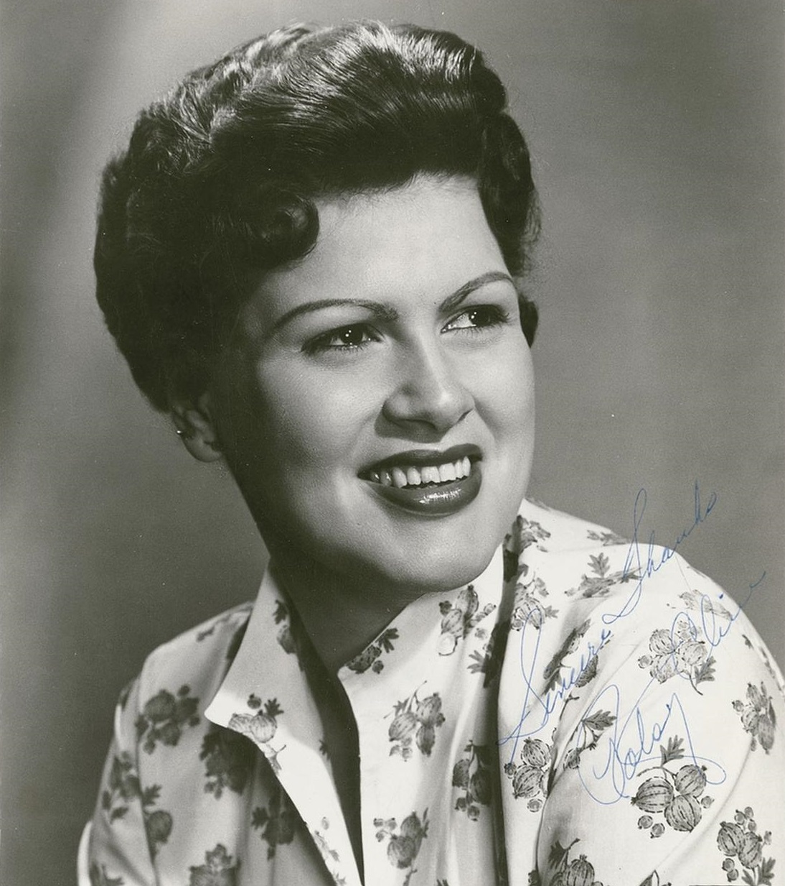

1960s country music split into two rival camps that pulled the genre in opposite directions.
Nashville's producers reached for strings and choirs, while Bakersfield's bands plugged in and turned up.

Table of Contents
- What This Genre Covers
- The Nashville Sound
- The Bakersfield Sound
- The Artists Who Defined the Decade
- Grammys, the CMA, and a Hall of Fame
- FAQ
What Is 1960s Country Music
1960s country music covers the decade running from 1960 to 1969, when the genre broke away from its 1950s honky-tonk roots.
Two rival production philosophies fought for control of the charts.
Nashville's studios smoothed the music's rough edges to win over pop listeners who had never bought a country record.
Bakersfield, California answered with a rawer, guitar-driven sound built in honky-tonk bars rather than polished studios.
Both camps shared the same decade, the same radio dial, and often the same artists moving between them.
A Genre Pulling in Two Directions
The tension between polish and twang runs through nearly every major record of the era.
Some singers, like Patsy Cline, embraced strings and crossed straight into pop.
Others, like Buck Owens, built a career on refusing to soften the sound at all.
By the decade's end, that same tension helped seed outlaw country in the 1970s.
The Nashville Sound
The Nashville Sound is generally dated to 1957 or 1958, and it dominated country radio through most of the 1960s.
Producers Chet Atkins and Owen Bradley are usually credited as its chief architects.
They stripped out the honky-tonk instrumentation, fiddle and steel guitar, that had defined country in the 1940s and 1950s.
In their place came string sections, background vocal choruses, and a smoother, more personal crooning style.
Rolling Stone later credited Atkins with inventing the "popwise" sound that rescued country music from a commercial slump.
The goal was a record that could play on both country and adult pop radio stations at once, and it largely worked.
Patsy Cline and the Genre's Crossover Voice
Patsy Cline became the Nashville Sound's most enduring voice.
Born in Winchester, Virginia, she signed with Decca Records and worked closely with producer Owen Bradley.
Her 1961 single "Crazy," written by a then-unknown Willie Nelson, became one of the most-played jukebox songs of all time.
"I Fall to Pieces," also from 1961, gave her a second signature hit the same year.
Cline died on March 5, 1963, in a plane crash near Camden, Tennessee, alongside fellow stars Hawkshaw Hawkins and Cowboy Copas.
She was 30 years old, and her catalog still anchors any serious look at the era.
The Bakersfield Sound
The Bakersfield Sound grew out of honky-tonk bars and local television stations in Bakersfield, California.
Singer Wynn Stewart is often credited as an early pioneer of the style.
Buck Owens and his band, the Buckaroos, carried it to the mainstream in the early 1960s.
Twin electric Telecasters, picked rather than strummed, drove the sound alongside a heavy backbeat and occasional pedal steel solos.
It was a direct reaction against Nashville's orchestral polish, built for dancing rather than crooning.
Owens' 1963 hit "Act Naturally" carried the sound to a wider audience than any Bakersfield record before it.
The Beatles covered "Act Naturally" on their 1965 album Help!, with Ringo Starr singing lead.
Merle Haggard's Road From San Quentin to the Charts
Merle Haggard gave the Bakersfield Sound its second defining voice.
As a young inmate at San Quentin State Prison, he watched Johnny Cash perform there on New Year's Day, 1958.
The show reportedly pushed him toward music once he was released.
Haggard's "Mama Tried," a 1968 hit, drew directly on his own prison record.
"Okie from Muskogee," released in 1969, became one of the most talked-about country singles of the decade.
Both songs carried the working-class, rural pride at the heart of the Bakersfield Sound.
The Artists Who Defined the Decade
No single artist owns this era of country music.
These eight names, spanning both the Nashville and Bakersfield camps, shaped what the decade became.
- Johnny Cash, the "Man in Black," whose "Ring of Fire" and prison concerts bridged country, rockabilly, and folk audiences
- Patsy Cline, the Nashville Sound's pioneering crossover voice on "Crazy" and "I Fall to Pieces"
- Buck Owens, the architect of the twangy, electric Bakersfield Sound
- Merle Haggard, the Bakersfield songwriter whose "Mama Tried" and "Okie from Muskogee" made him a country institution
- Tammy Wynette, the "First Lady of Country Music," best known for "Stand by Your Man"
- Glen Campbell, a crossover star whose Jimmy Webb collaborations produced "Wichita Lineman" and "By the Time I Get to Phoenix"
- Roger Miller, the witty singer-songwriter behind "King of the Road" and "Dang Me"
- Loretta Lynn, the coal miner's daughter whose candid songwriting broke new ground for women in country
Grammys, the CMA, and a Hall of Fame
Roger Miller's "King of the Road" topped the country charts in 1965 and reached number 4 on the Billboard Hot 100.
At the 8th Annual Grammy Awards in 1966, the song won Miller five Grammys in a single night.
Those wins included Best Country and Western Song and Best Country and Western Vocal Performance, Male.
The genre also built new institutions to match its growing pop crossover.
The Country Music Association held its first Awards ceremony on October 20, 1967, at Nashville's Municipal Auditorium, where Eddy Arnold won Entertainer of the Year.
The Country Music Hall of Fame and Museum opened its own building on Music Row that same year.
A Decade That Set Up the 1970s
By 1969, both the Nashville and Bakersfield camps had built lasting institutions and stars.
That foundation carried directly into the outlaw country movement of the following decade.
Merle Haggard and Johnny Cash both became key figures in that next chapter.
1960s country music, split as it was between two sounds, left the genre stronger for the fight.
FAQ: Country Music in the 1960s
How did country music change during the 1960s?
Country music moved from raw honky-tonk roots into two competing studio approaches during the decade.
Nashville producers added string sections and choirs to court a pop audience, while Bakersfield, California bands kept the electric guitars loud and the sound rooted in honky-tonk.
What is the difference between the Nashville Sound and the Bakersfield Sound?
The Nashville Sound used lush strings, background choruses, and a smooth, crooning vocal style to soften country's rural image.
The Bakersfield Sound pushed back with twin electric Telecasters, a hard backbeat, and a rougher, rockabilly-influenced attitude.
Who were the biggest country stars of the 1960s?
Johnny Cash, Patsy Cline, Buck Owens, Merle Haggard, Tammy Wynette, Glen Campbell, Roger Miller, and Loretta Lynn were among the decade's defining artists, spanning both the Nashville and Bakersfield camps.
Why is Patsy Cline important to country music history?
Patsy Cline's smooth, emotive delivery on songs like "Crazy" and "I Fall to Pieces" helped the Nashville Sound cross over to pop radio.
Her death in a plane crash on March 5, 1963, at age 30, cut short one of the genre's most influential careers.
Did The Beatles cover a 1960s country song?
Yes.
The Beatles recorded Buck Owens' 1963 hit "Act Naturally" for their 1965 album Help!, with Ringo Starr singing lead, introducing the Bakersfield Sound to millions of rock fans.
The Nashville Sound and the Bakersfield Sound never fully reconciled, and that rivalry is exactly what made the decade so productive.
Test what you have learned with the What's Your 60s Sound? quiz or the 1960s Music Trivia tool.
Head back to the 1960smusic.net homepage to explore every other genre that shaped 1960s country music's decade.